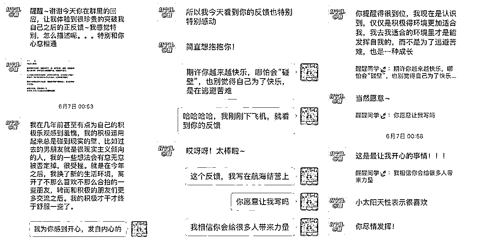

来源：https://hv98720ctd.feishu.cn/docx/PPXXdVYq3ohbd6xWoQUciwdQnKh
大家好，我是醒醒，5月「个人优势航海」教练之一，个人优势航海手册的主要撰写者。这期个人优势航海又要开始了，收到不少对这条船困惑的朋友，我想从教练和盖洛普使用者2 个角度给大家一些参考，如果有疑问也可以评论区交流～
先做个自我介绍，我叫醒醒，盖洛普官方认证优势教练/个人成长教练/生财有术团队的优势培训师，累计帮助 2000+人完成盖洛普测评，3年训练营运营经验，2年教练经验，连续3年和靠谱一起带领圈友做生财拉新，累计拉新1000+人。
过去6年，我一直做着和人打交道的事，转型 4 次后开启的教练事业，能持续做自由职业 5 年的原因之一是，我在用我的优势和这个世界打交道，我的核心始终是和人在一起。
和我的盖洛普报告也挺匹配：关系建立>战略思维>执行力>影响力，如果我不是一个对人敏感的人，我不会做这类事有价值感，但这是我最近 2 年才明白的。
此前的20多年，我几乎都在尝试弥补我的短板，忍不住和别人对比，但总因为补短失败习惯性的回到自己“觉得简单”的事上来，我以为这是因为我不如别人我没得选，只能认了。
接触盖洛普后我又想：有没有一种可能，不是我们不如别人，而是因为我们做了擅长的事呢？擅长的事本来就应该做起来比别人容易一些啊？但反过来看，非要去做别人擅长的事，结果不如别人不是很正常吗？
幸福的生活不应该是这样的：越努力越不可得，越是自我否定，我在做优势教练的路上，也是先治愈了自己后，才真正懂得这个工具的价值的。
我一直在思考普通人是不是真有天赋和优势？有没有可能通过盖洛普帮大家突破卡点，更好的赚钱和生活？这个答案，我一直也没想通，在上次航海期间，我看到了“yes”的可能性！
人多数时候的痛苦是什么？
我希望我是那样的，但实际却不是。我希望别人是这样的，但实际也不是。当我想控制自己或他人变成另一个样子，事情总是不顺利，但当“我想”、“我应该”、“我能”都刚刚好的时候，人的幸福感最强。
人说千里之行，始于足下，赚钱之行，也始于自己，始于一个人的天赋，经验、资源的积累，脱离这些谈机会和执行，也是有可能费力不讨好的。
盖洛普就是一个能帮我们发现自己的需求、做什么事更有动力、做什么事会不顺的工具，为了便于大家理解，我来分享几个航海期间的案例（都已获授权）
来自圈友@青梅酱， 航海期间我经常看到她在群里发言，对人生似乎有一些困惑，当时我布置了一个作业，她写到：
当时她知道了自己“希望能做一个持续学到东西，能为别人创造深层价值的事”，但困惑于自己盖洛普里影响力并不突出，我给了她一个着手点，“将自己的成长产品化，结合自己想做的事，尤其是她战略思维突出，写内容应该不难的，难点在如何写好，写爆上（这是技巧问题，不是天赋问题，技巧是可以后天修炼的）”
（学习才干突出的朋友，是不是很有同感，总是学东西比一些人快、很有好奇心，停不下成长的步伐，没错学习也是一种天赋）。
从报告和交流中来看，青梅酱不是那种做事只看钱和结果的人，她需要做她认为有价值的事，过程对了，结果就对了。不是反过来死盯赚钱这个目标，什么项目都做的人。
做之前还需要先做好规划、在做的过程中不断迭代自己，这样的节奏最能帮助她拿到结果，短频快的钱反而不见得适合她。一旦确定执行力可以拉到爆，外加战略思维维度的优势，写的内容非常能打动人。
在看到这些后，她在实践中迭代，一夜之间小红书单条笔记涨粉 2000，这个内容就是“将自由职业的经历总结起来，走心派内容”。
她有一篇内容写的也非常好：不知道大家能不能从她的文字里感觉到一种“写进人心里的感觉”，也是因为她本人有敏锐的情绪感知力，共情力（体谅才干排第2），这可能是一种与生俱来的天赋，用一种走进人心里的方式，让人感受到共鸣，以此建立了情感链接，会被人记住的影响力。
想象一下，如果用她不喜欢的方式做内容，一味追求爆款式增长的影响力，她会有动力持续写吗？很难持续，结局也是放弃，但如果用她喜欢的方式，细水长流也是不错的。
我非常开心的是她越来越有能量了，且接到广告也能变现了，从我的角度来看，选项目只是赚钱当中的一项，如何选能发挥自己优势，持续有动力，符合个人需求的项目也同样重要。
来自圈友，职业经理人，公司即将准备 IPO，平时负责对接很多的合作方以及培养业务骨干，最近在带领团队过程中，有一些瓶颈。
我和他复盘了一下他的业务逻辑、以及对核心成员的分析和培养机制，发现他其实是个特别能抓大放小、把握关键机会、激励下属的人，如果让他总去纠下属的错，肯定会影响关系，这是很耗他的能量的。
因为他是一个做事就希望做好，很能调动团队氛围，用好团队力量的人，激励为主。
他的“完美+沟通+积极才干”非常突出，是一个非常能给予他人赞美，想搭建优势互补团队，一向也不怎么喜欢“补短板”的人，对他来说，用最专业的人一起做专业的事，绩效会更好。
让这样的人天天纠成员的错，做他本身就讨厌的事，怎么会顺利呢？如果充分发挥他这种用人的能力，组员舒服，他也舒服，绩效并不差。
从他给我的反馈中，看得出来调整到优势视角后，工作顺利了很多。他确实非常擅长观察别人的优势，上至老板下至组员，也很能根据对方的状态调整自己的反馈机制，也得益于他关系建立的 4 个才干都突出，当他的组员是非常幸福的。
一个人在做顺手、擅长的事时，是比做不擅长的事更容易得到正反馈的，正反馈来的频率越高，人也越有动力持续投入，提高效率，产出结果。
尤其是领导者或经理人，要通过他人完成任务，很多结果不可控，如果能看到组员的优势，把人放在合适的位置上，而不是让大家做不擅长的事，互相扯皮，相信团队的幸福度会提升不少，敬业度也会提升。
亲密关系方向：增进互相的理解，找到合适的相处方式
左图女生（钱钱），右图男生（钱钱的聪明老公）
1、来自圈友钱钱的反馈，她生活中属于非常乐观的人，看什么事都容易看到好的一面（积极），可能不会顾虑很多就会开始一段关系、做一件事。她老公是个做事喜欢考虑投产比，回报率，认准了就出击，出击就要有结果的人（分析+专注+成就+战略）。
钱钱每次想做什么事，她老公开启“理性分析模式”的结果，往往最后都是不值得搞，久而久之钱钱容易有挫败感，似乎做什么都考虑的不够周全，他俩生活里也很不同。
举个常见现象：
她老公逛街的方式是买什么直奔商场，买完走人效率极高（专注才干）。钱钱逛街的方式是先去看看，随性逛逛。可能一开始想去海底捞，去了以后发现有家店不错进去逛逛先，出来觉得椰子鸡不错不吃海底捞了，但她老公可能就懵了：“不是说来吃海底捞吗？怎么逛街去了?”
对钱钱来说，强迫她老公逛街既扫老公的兴，自己也不开心，只能找好朋友一起逛了。对她老公来说，他理解不了为什么钱钱变来变去，不是说好了吃海底捞吗？ 变了的话后面的时间行程都要更改多麻烦？
他们之间没有谁对谁错，只是因为两个人是不同的人，做事上方式不同，价值观不同。
钱钱是体验的随性派（积极才干），她老公就喜欢她像小太阳有能量这一点，让人舒服。而她老公却是雷厉风行的那一派，钱钱喜欢他理性之下帮她成长了很多。
但？生活上怎么融合，更能互补呢？从了解彼此到懂彼此，调整彼此的方式。
比如说逛街，钱钱出门前和老公说好当天的逛街流程，先去哪再去哪，如果看到什么店可能会先逛一下，让他老公清晰的了解日程，心里就有底了。
同时钱钱也需要表达自己想尝试副业的需求，重新调整彼此的预期，双方看得到这段感情里彼此欣赏的点是什么，不要求对方成为全能战士，正所谓“万人宠不如一人懂”，在懂彼此的基础上找到能互补的点，正反馈就来得容易多了。
（没和她老公交流过，暂时无法给他老公提意见哈哈哈）不过目前的效果还不错，最近钱钱都挺开心的。
航海期间，也收到过另一位圈友的反馈，她也有过一位“理性、看事情先预设困难再考虑行动”的伴侣，但当时的相处让她本能的感觉挫败，一度怀疑自己。
我俩在航海期间就她的盖洛普报告讨论过，说到她的积极才干时，她解开了心结，原来不是她的错，只是她有“被人看见、肯定、鼓励”的需求。

盖洛普在亲密关系中的应用效果也是不错的，无论是亲子、伴侣、朋友关系。但必须关系中的双方都愿意用这个工具来探索才行，一方的努力始终有限。
我们可以先用它看到自己在关系中的价值，可能会用什么评判标准来衡量对方，少一些“猜测”、“试探”、“自我否定”，多一些“确定”、“自我肯定”。
在关系里，谁先改变，谁就是关系的引领者。
航海结束后，我认识了个圈友，她地处N线城市，从摆地摊卖光碟到开了一家小店，靠勤奋努力买车买房，但疫情前后连年亏损。
在加入生财之前对互联网赚钱几乎是不懂的，周围也没有能聊得来的朋友。参与第一次航海受挫后半年没打开生财，再到硬着头皮坚持天不亮读帖子，到研究外卖做到区域第二，虽然她目前的收入还不是年薪百万的级别，但同等条件下，她做到这个程度，我觉得是非常了不起的，她的自述如下。
看得出来这是一个非常喜欢思考，人生始终朝前看，渴望成长，喜欢学习的人，身上也有一股子韧劲。可能单独拎出“爱学习”这一个点，就足够让人惊叹了。
我听完她的故事，忍不住为她竖大拇指，我们也一起列了她能尝试的新项目，目前无法完全匹配哪个项目最合适，但已经剔除了几个，出结果还需要一段时间，不过我很看好她的韧性。
从我航海时的观察来看，学习才干靠前的人在生财的比例非常高，同时也是最受圈友喜欢的才干 top3。他们的特点是：遇到新东西很愿意学，有的喜欢研究玩法，有的喜欢实战式学习，只是要留意别忽略了学习的目标，学了一堆暂时用不上的，可能会劳民伤财。
这位圈友最强的一点是，即便周围没有什么参考对象，没有得天独厚的条件，但非常肯学，也不抱怨任何外界因素，始终坚持在自己的成长上投资，坚持实战，在周围没有参考对象，甚至都没什么人爱学习，不了解互联网的环境里，她改变了自己的命运。
学习是孤独的，思考是孤独的，实战是孤独的，可能很多个时刻，我们在成长、赚钱上都有过孤独的时刻，但我觉得努力过后种出果实的幸福感可以让那些孤独忽略不计，这也比认命的人生要有趣的多。
如果你善于学习，就将学习和赚钱联系在一起，并发挥到极致。
如果你善于开始，那就多开始几次，用多次的验证+高频迭代来验证适合你的项目。
如果你善于选项目但不善于做，可以尝试找执行力强互补的人一起做，不要浪费了才能。
如果你善于搞定人，那就多做一些和人有关的生意，哪怕没有自己的产品，卖别人的产品也可以收入颇丰。
我一直相信，这个世界上的每一种才能都是有价值的，只不过要被放到一个正确的环境里才能体现出来。
说到这里，大家会发现我没写太多参加完“个人优势航海”就立刻月入十万、百万的故事，因为这不现实，这条船也做不到让你立刻发现优势，找到人生、工作、创业上的唯一正确解。
不过，我写了有所改变的这几位圈友，他们的力量、痛苦点可能来自哪里，他们在认识优势后的转折点，心路历程是怎样的，这也符合我对成长的认识：成长是动态的、阶段性的，并非一夜之间改变的。
我们看到的一个人的改变，往往是来自改变前，他们有无数的积累。那么，改变从何而来呢？从认识自己开始，看到了自己的需求、内心的渴望才能知道往哪个方向改、改什么、以及怎么改。
盖洛普这个工具虽然是用来识别优势的，但总的来说要经历几个阶段：
每个船员的基础不同，在阶段上要花的功力也不同。和自己比就好～
接近我人生的前30年，我一直为补短板而努力，最近几年的修炼也让我开始更能看到优势的力量，舒服的修理自己，拥有了第一桶金。基于我自己的3 年试验结果，作为教练，我希望航海期间能做到：
最新一期的航海手册，我也在前段时间迭代完毕，增加了“执行力卡点”、“社交关系卡点”、“亲密关系卡点”、“时间管理卡点”、“不自信”、“情绪管理”、“职场问题”等几个方向的应用案例，生财团队是真的很负责，调研、确认主题、迭代。
我也在本次航海中，增设了一部分运营，延续上一期的“教练发问”环节的风格，帮助大家更轻松的学习如何使用这个工具，盖洛普或许不能立刻帮你达成某个目标，它能做到的是帮你看到自己的动力来自哪，卡点可以怎么解决，如何更清楚的“使用自己”。
非常非常非常感谢生财有术，没有生财有术的支持，发起并组织个人优势这场航海，我也没机会历练 2000 人的活动，也不会现在逼自己整理盖洛普相关的知识、案例，放在全世界，能同时组织 2000 人的盖洛普活动，生财也是 top 级别的。生财帮了我也帮了很多文中这样的人，非常感谢生财。
这是我临时写的分享，思路可能有点散，有想交流的朋友，咱们可以评论区或航海群内继续交流～
今晚是航海的最后一天报名，期待大家一起来发现自己的优势！加速成长，少走弯路，直面优势，直面未来。